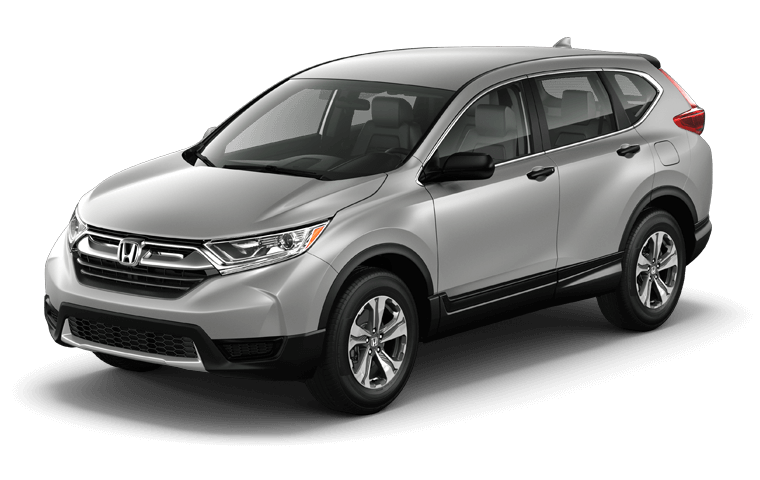
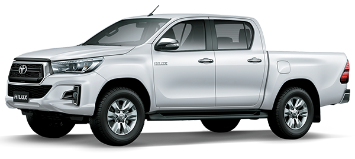

Seat IbizaPara México, la oferta de motores al momento de su lanzamiento se limita al bloque atmosférico de 1.6 litros de 110 hp de la generación actual para todas las versiones, disponible con transmisión manual de 5 velocidades y transmisión automatica. SEAT menciona que el motor turbo de tres cilindros de 1.0 litro de 115 hp se ya se encuentra disponible.
|
|---|
 Volkswagen PoloVolkswagen Polo 2019 en México queda compuesta sólo por dos versiones: Startline y Design & Sound, ambas con transmisión automática Tiptronic de seis velocidades y motor atmosférico de 1.6 litros de 105 hp y 112 lb-pie. La marca anuncia un rendimiento de 13.4 km/l en ciclo urbano. Se menciona la disponibilidad de transmisión manual, pero no se ha especificado su precio. |
 Volkswagen Jetta
El Volkswagen Jetta por fin ha dejado enterrados en el pasado los veteranos motores atmosféricos de 2.0 y 2.5 litros que lo acompañaron por más de una década. Ahora, a imagen y semejanza del Golf, utiliza un motor turbo de 1.4 litros de 150 hp y 184 lb-pie. Se puede pedir con transmisión manual de seis velocidades o una automática Tiptronic también de seis cambios. El consumo oficial en ciudad es de 15.8 km/l para el modelo automático y de 17.2 km/l para el manual. |
|---|
 Nissan VersaDesde el primer vistazo, es innegable que el Nissan Versa 2020 es un sedán mucho más atractivo que el modelo anterior. Deja atrás las líneas controversiales, en favor de un rostro más parecido al de otros autos de la casa, como el Micra europeo o el LEAF. Destaca la parrilla en forma de V con acabado negro brillante, la incorporación de faros de LED y las líneas de estilo que encontraremos en la cintura y en el poste C. |
Honda CR-V
SUV que presenta un gran balance entre potencia y rendimiento. Ya sea con su motor i-VTEC® de 2.4 L y 184hp* o el impresionante VTEC® Turbo de 1.5 L y 188hp**, disfruta conducirla cada día. CR-V es única en su categoría al tener un impresionante caballaje en un motor pequeño, lo cual resulta en una potencia superior para enfrentar cualquier reto en el camino.Su Transmisión Continuamente Variable (CVT) se encarga de convertir toda esta potencia en una asombrosa experiencia de manejo, brindando cambios suaves e imperceptibles. |
|---|
 KIA SportageLos cambios en su apariencia son muy sutiles. El frente es protagonizado por un nuevo diseño de tomas de aire e iluminación de LED de cuatro puntos para las luces de conducción diurna —con el mismo estilo que los nuevos Forte y Ceed. En la trasera hay un par de curvas nuevas en la forma de las calaveras y también una reubicación de las luces direccionales en el parachoques. |
 Nissan NP-300
Caracterizado por su pujante desarrollo económico requiere soluciones de transporte ligero como la pickup Nissan NP300 la cual se ofrece desde chasis cabina, estaquitas (caja estilo ganadero), cabina sencilla y doble cabina, constituyen la más poderosa oferta de mercado en este segmento. |
|---|
Toyota HiluxViene en tres configuraciones básicas, la chasis cabina, la pickup en cabinas sencilla y doble para satisfacer las inumerables necesidades del transportista nacional. |